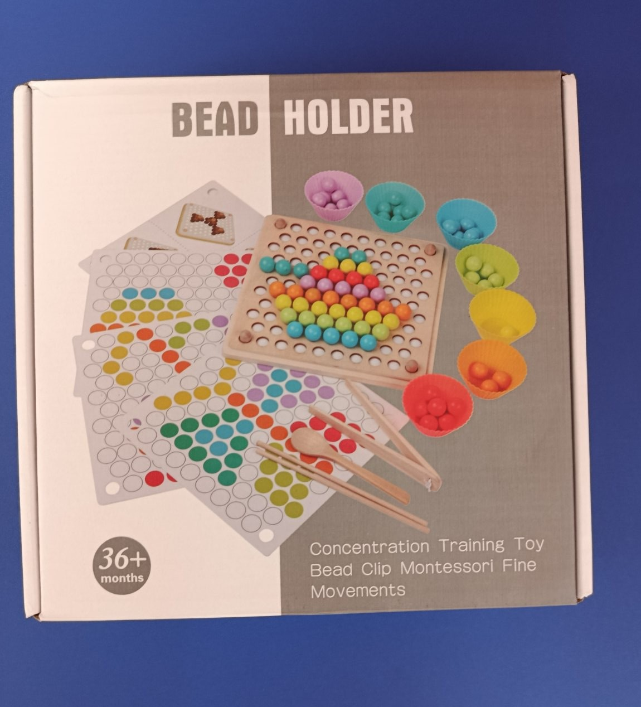

Дървен държач за мъниста Монтесори -
позволява на децата да се учат да броят, да съчетават, да разпознават цветове и т.н.
Подобрява фокуса и вниманието на детето, докато се занимава с поставяне и сортиране на мъниста.
Развива логическо и пространствено мислене.